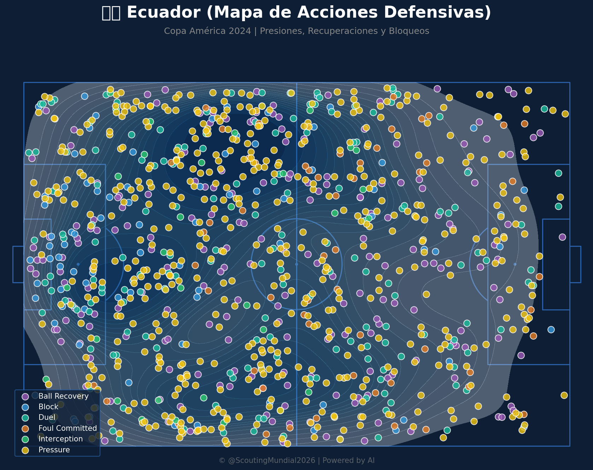
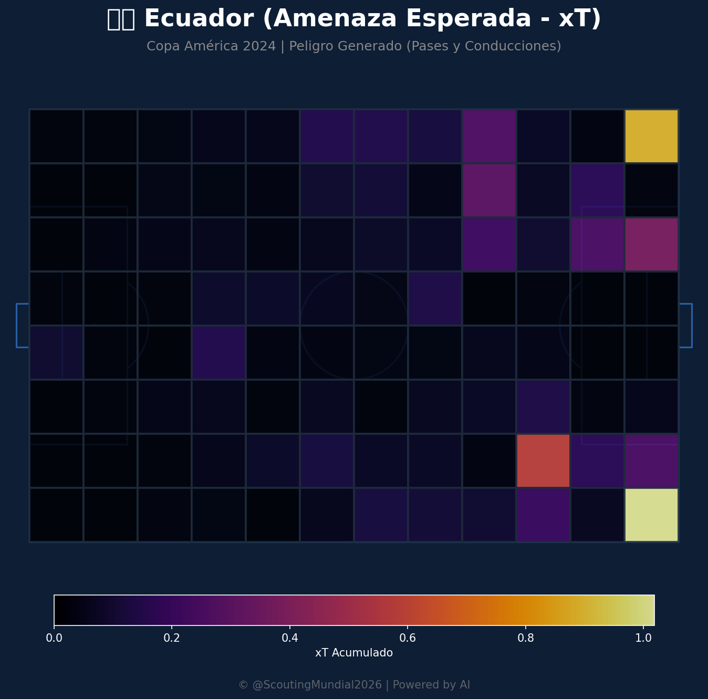
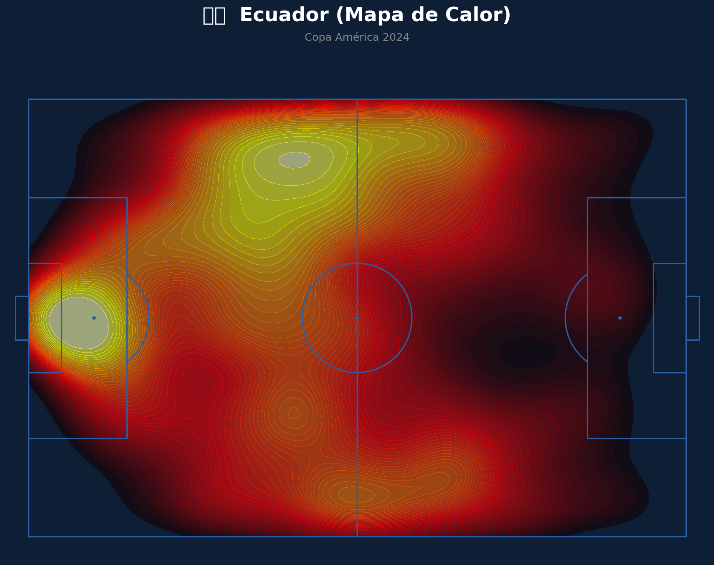
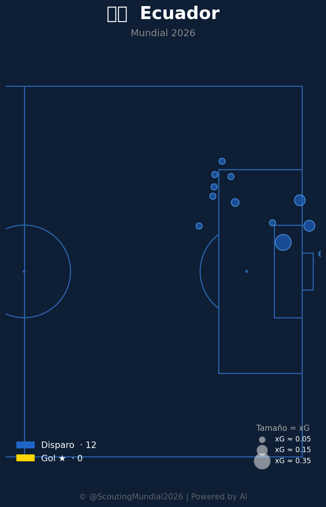
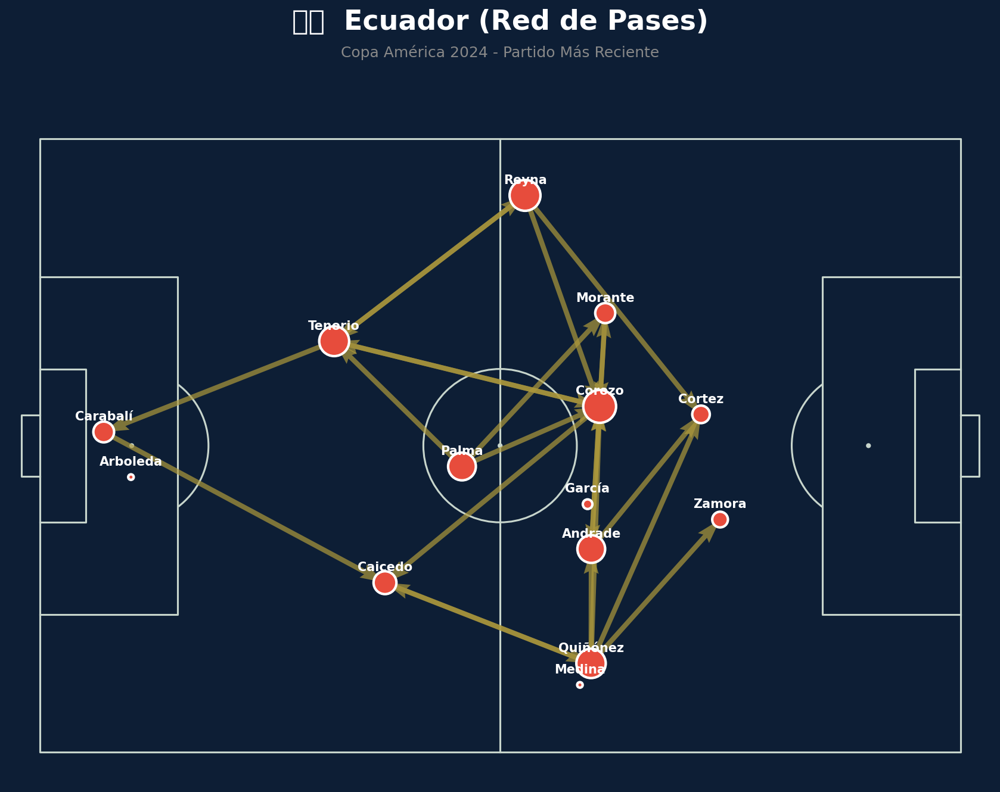
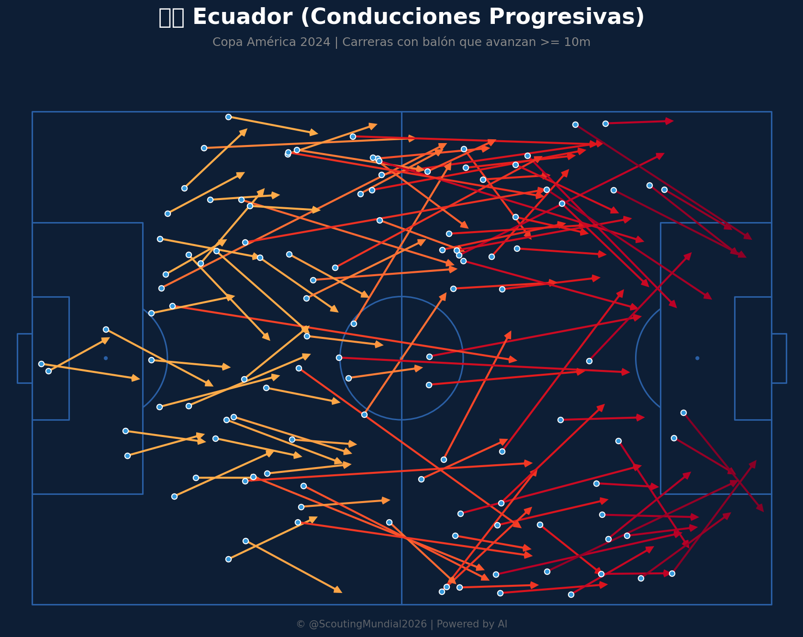
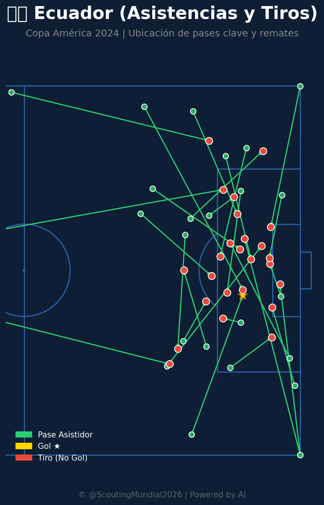
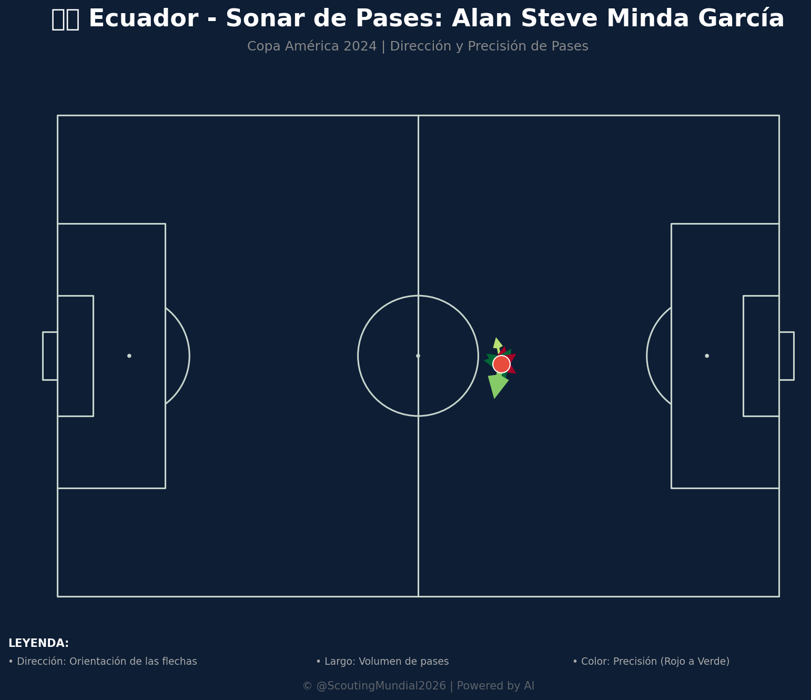

Este análisis enfrenta a dos selecciones con perfiles distintos: una con gran volumen ofensivo y dominio territorial (Costa de Marfil) y otra más compacta y dependiente de jugadas puntuales (Ecuador). Los datos sugieren que Costa de Marfil llega como favorito, aunque Ecuador tiene herramientas para hacer un partido incómodo.
🇨🇮 Costa de Marfil: Análisis Táctico
El mapa de calor marfileño muestra un dominio territorial muy amplio, con fuerte presencia tanto en el medio campo como en el último tercio, incluyendo dos zonas de alta concentración en posiciones centrales/avanzadas que sugieren un equipo cómodo manejando el balón cerca del área rival. La red de pases confirma una estructura bien conectada: Ndicka y Sangaré aparecen como ejes centrales de la circulación, con Diomande, Kessié, Konan, Fofana y Aurier participando activamente en la progresión hacia ataque, lo que indica un equipo con buena salida desde atrás y variedad de circuitos de pase.
El mapa de conducciones progresivas es impresionante en volumen: hay carreras con balón que llegan constantemente al último tercio desde ambas bandas, lo que habla de un equipo muy vertical una vez supera la presión inicial. El mapa de amenaza esperada muestra que el mayor peligro se genera por el costado derecho del ataque, con valores especialmente altos cerca del área rival. En defensa, el mapa de acciones revela una presión intensísima y extendida por todo el campo, una de las características más fuertes de este equipo: recuperan el balón en zonas muy diversas, incluso en campo propio y en el medio campo rival por igual.
En cuanto a definición, los números son sólidos: 89 disparos y 13 goles (alrededor de 14.6% de conversión), con los remates muy concentrados dentro del área y varios goles agrupados cerca del punto de penalti.
🇪🇨 Ecuador: Análisis Táctico
El mapa de calor ecuatoriano cuenta una historia más defensiva: aunque tienen presencia en el medio campo, se observa una concentración muy marcada cerca de su propia área, lo que sugiere que pasan bastante tiempo construyendo desde atrás bajo presión o defendiendo en bloque cerca de su portería, con menos ocupación sostenida en campo rival.
La red de pases muestra una estructura más vertical y menos interconectada que la marfileña: Corozo y Quiñónez aparecen como los nodos más importantes, conectando con Tenorio, Reyna, Morante, Caicedo y Andrade, pero con menos triangulaciones internas, lo que indica una salida de balón más directa y menos posesión controlada. El sonar de pases de uno de sus mediocampistas (Minda García) muestra una mezcla de precisión, con pases hacia adelante y hacia atrás de fiabilidad variable, reflejo de un volante que reparte juego pero sin una dirección dominante clara.
El mapa de amenaza esperada de Ecuador muestra focos de peligro muy puntuales, concentrados en esquinas específicas del último tercio, lo que sugiere que su generación ofensiva depende de jugadas concretas más que de un dominio sostenido. El mapa defensivo muestra buena cobertura en el medio campo y zona defensiva, aunque con menor intensidad de presión en el campo rival comparado con Costa de Marfil. En definición, acumulan 48 disparos y 6 goles (cerca de 12.5% de conversión), con los remates agrupados principalmente dentro del área pequeña.
⚖️ Comparativa y Veredicto (Pre-Partido)
Ventajas y Desventajas
- A favor de Costa de Marfil: Mayor volumen de juego, presión intensa y constante, una red de pases muy conectada que facilita la progresión, y casi el doble de disparos y goles que su rival.
- En contra de Costa de Marfil: Con tanta exposición ofensiva y una presión tan alta en todo el campo, podrían quedar expuestos a transiciones rápidas si Ecuador logra robar el balón en zonas altas.
- A favor de Ecuador: Un bloque defensivo razonablemente ordenado en su propio campo y la capacidad de generar peligro puntual en zonas específicas del último tercio, lo que podría traducirse en goles aislados si aprovechan bien esas oportunidades.
- En contra de Ecuador: Menor dominio territorial, una estructura de pases menos fluida y dependiente de pocos jugadores, y un volumen de tiros considerablemente menor, lo que limita sus opciones de generar peligro constante.
Qué podría hacer cada equipo
- Costa de Marfil debería seguir apostando por su presión alta para asfixiar la salida de Ecuador, especialmente explotando el costado donde generan más amenaza, y aprovechar su superioridad numérica en la circulación para desgastar al rival. También sería clave no relajar la cobertura defensiva en transición, dado que su línea participa activamente en la presión y podría dejar espacios.
- Ecuador, por su parte, necesita ser muy disciplinado defensivamente, mantener líneas compactas para no permitir que Costa de Marfil circule con comodidad en el último tercio, y buscar aprovechar al máximo las pocas transiciones que consiga, apuntando a las zonas donde históricamente generan más amenaza. Dado que su conversión de tiros es decente, concentrar sus esfuerzos en pocas pero claras ocasiones, posiblemente desde banda o mediante balones largos hacia espacios dejados por la línea alta marfileña, podría ser su mejor vía para sorprender.
En conjunto, los datos apuntan a una victoria de Costa de Marfil por volumen, dominio y eficacia, aunque Ecuador tiene el perfil de un rival que puede hacer un partido cerrado si logra mantener el orden defensivo y capitalizar sus pocas oportunidades.
📊 Pizarras y Gráficos Tácticos
Mapa Defensivo (Costa de Marfil)

Mapa Defensivo (Ecuador)

Amenaza Esperada xT (Costa de Marfil)

Amenaza Esperada xT (Ecuador)

Mapa de Calor (Costa de Marfil)

Mapa de Calor (Ecuador)

Mapa de Tiros (Costa de Marfil)

Mapa de Tiros (Ecuador)

Red de Pases (Costa de Marfil)

Red de Pases (Ecuador)

Conducciones Progresivas (Costa de Marfil)

Conducciones Progresivas (Ecuador)

Mapa de Asistencias (Costa de Marfil)

Mapa de Asistencias (Ecuador)

Sonar de Pases (Ecuador)
